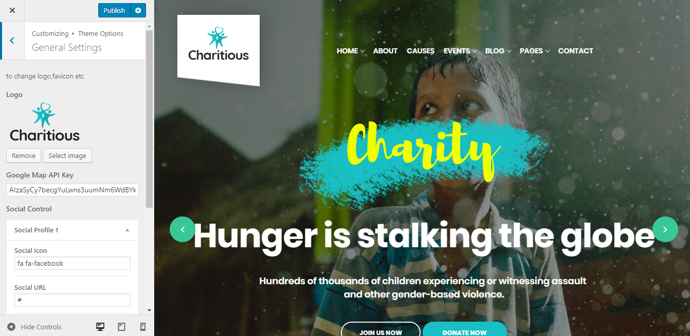
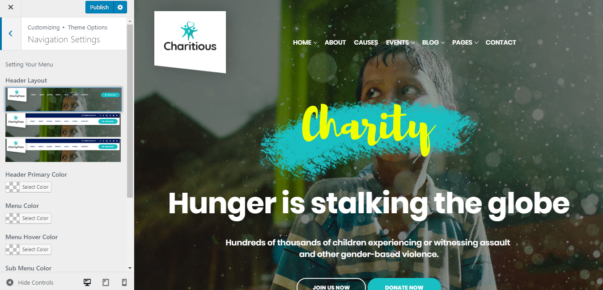
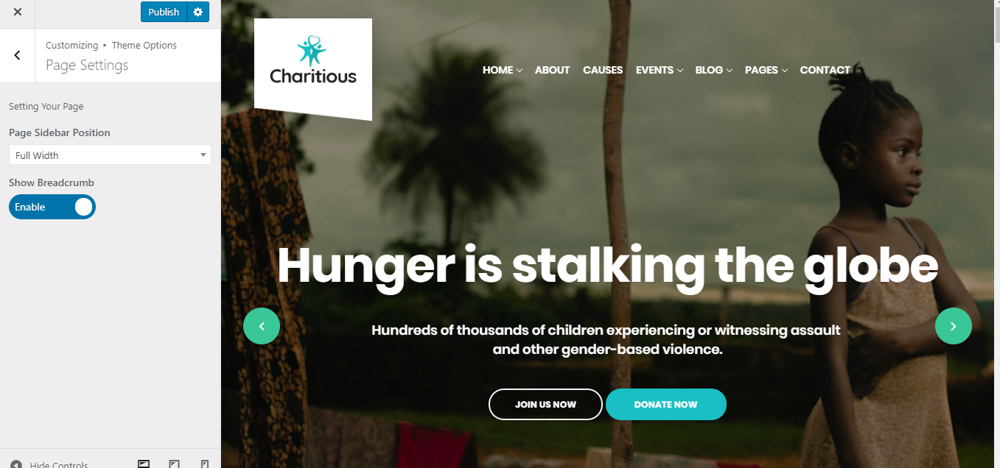
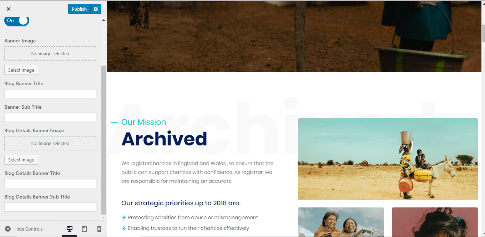
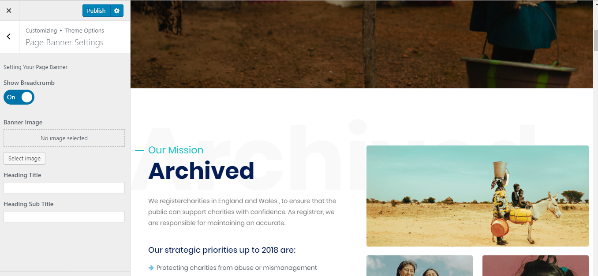
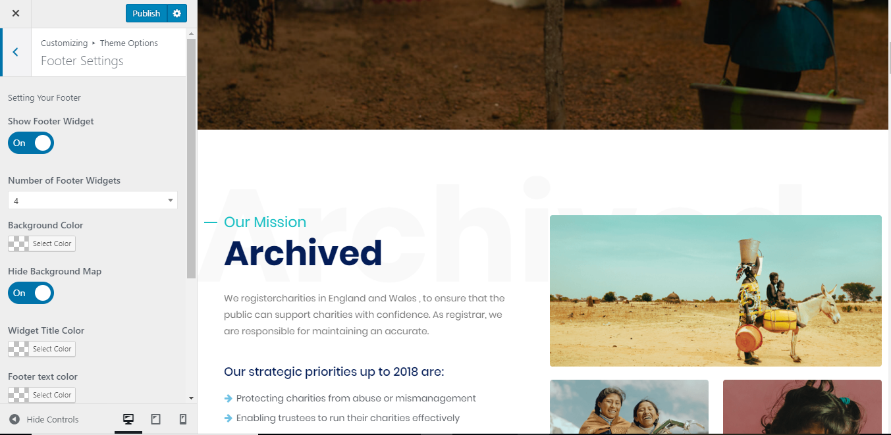
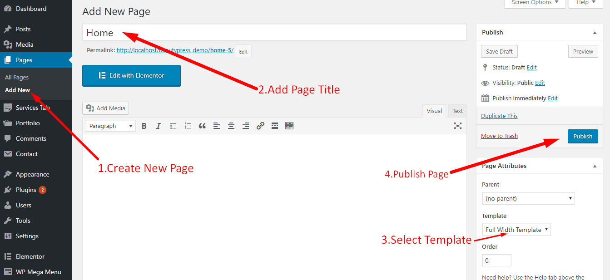
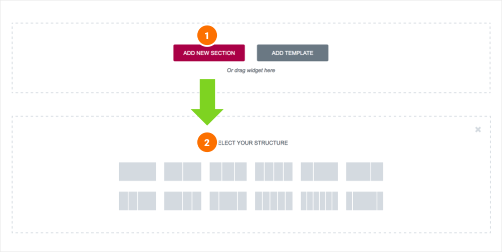
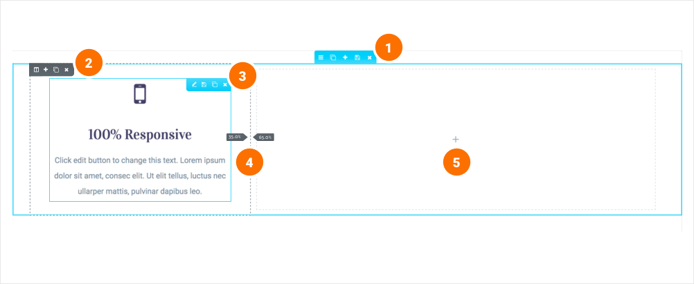

General information
Charitious Version: 1.0Created: 01/05/2018
Created by: XpeedStudio
Any Advice?: Send message from contact form
Need Help ? Open support ticket in our Support Center Our theme online documentation
Thank you for purchasing our theme. If you have any questions that are beyond the scope of this help file, please feel free to open support ticket in our support forum . Thanks so much!
Website Image Dimension
| Image | Dimension (WxH) | Size | File |
|---|---|---|---|
| Logo page | 200 x 110 px | Under 300KB | .svg |
| Banner Homepage | 1920 x 1051 px | Under 300KB | .jpg, .jpeg |
| Thumnail event home | 198 x 230 px | Under 300KB | .jpg, .jpeg |
| Banner all page | 1920 x 672 px | Under 300KB | .jpg, .jpeg |
| Logo brands | 170 x 170 px | Under 300KB | .png |
| Thumnail news home | 800 x 543 px | Under 300KB | .jpg, .jpeg |
| Team's image | 436 x 680 px | Under 300KB | .jpg, .jpeg |
Install Theme / required plugins / demo content and setup
- FTP Upload:
- Unzip the "charitious.zip" file from theme folder
- Open up your FTP manager and connect to your hosting
- Browse to wp-content/themes
- Upload the Charitious in theme folder
- Log Into WordPress and go to Appearance > Themes
- Find the Charitious Theme and click activate
- WordPress Upload:
- Log into your WordPress backend
- Navigate to Appearance > Themes
- Click Install Themes
- Click Upload
- Now you just need to find the "Charitious.zip" in the Upload folder and hit Install now.
- After complete installation click on active button to active The theme.
If you are experiencing any issues during the installation I would recommend to check out this
Installation Screencast
- ACTIVATE THEME
- .. That's it ! :) ...
Here's our demo data install screencast:
Theme Customizer
General Setting
You can find the all Theme Option from Appearance-> Customize->Theme Options
From General Settings, you can add/update your site logo, Google Map API Key and social icons.
Navigation Setting
Get All Navigation settings From Appearance-> Customize->Theme Options-> Navigation Settings
Page Settings
Get All Page settings From Appearance-> Customize->Theme Options-> Page Settings
Blog Banner Settings
Get All Blog settings From Appearance-> Customize->Theme Options-> Blog Banner Settings
Page Banner Settings
Get All Page settings From Appearance-> Customize->Theme Options-> Page Banner Settings
Footer Settings
Get All Footer settings From Appearance-> Customize->Theme Options-> Footer Settings
Visual Page Builder
Accessing the editor
To start working with Elementor, go to the WordPress dashboard. Then, add a new page by clicking on Pages > Add New. Then, click on the 'Edit with Elementor' button.
Elementor UI: Getting to know the interface
The Elementor page builder includes these main areas:
1.
Panel (Top): Use the search field to find a widget.
2.
Widgets / Widget Settings: Choose a widget and configure it.
3.
Preview Button: Enables you to preview the page. Once clicked it hides/shows the panel.
4.
Panel (Bottom): View page, Go back to Dashboard or Save page.
5.
Content Area: Drag & drop widgets and design your page.
6.
Add New Section / Add Template: Choose between creating a new section or inserting an existing template.
Creating your section
A section is the most basic element that you can work with. It's the building block of every page. A section can be set as full width and spread all over the screen, or receive the content area width (by default).
After you create a section you can drag and drop a widget inside. You can also divide each section to few columns. Every page you create can contain as many sections as you want. You can drag a section above or under another one to relocate it.
- Add New Section: Click this button to create a new section or simply drag a widget from the panel and drop it in the content area.
- Select Yout Structure: Choose a structure for your section (Later, you can edit the exact width of every column). You can edit, duplicate or delete a section. You can also save it as a template or add a new section above. 
- Bootstrap
- Ajax chimp
- Unison Framework
- jquery.countdown
- jquery.easing
- jquery.easypiechart
- jquery-contact
- jquery.localScroll
- jquery.scrollTo
- modernizr-2.8.3
- owl.carousel
- smoothscroll
- tweet-featcher
- wow.min
- waypoints
Adding columns to sections
Every section includes one or more columns. You are able to insert your content into each column. You can easily arrange and order the columns, simply by dragging and dropping them.
You can edit, duplicate, add or delete a column. You can also drag & drop it anywhere on your page. Resize Column: Drag right & left to change the width of your columns.
Inserting a widget
Click the content to edit, duplicate or delete a widget. You can also save it as a Global Widget. Add Widget: Drag a widget from the left panel and drop it into a column.
1. To edit a widget, click the pencil icon.
2. On the Panel header, you can choose to edit the widget's content and style.
3. Every widget has a different setting.
4. You can save your current changes at any stage.
5. When you have finished designing, click the 'X' button at the bottom panel and view the page.
Credits
The Plugins/Components that were used to make this theme:
Video Background Used:
icons Used:
Image used
Special Thanks to:
Personal images used in demo, and for demo content themeforest assets library.
Once again, thank you so much for purchasing our theme. As we said at the beginning, we are glad to help you if you have any questions relating to this theme. Just contact us via email at xpeedstudio@Gmail.com. And please do not forget to rate this theme! :)
XpeedStudio